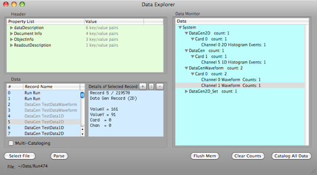

Data Explorer



The Data Explorer is used to examine the individual event records from an ORCA run. One can load in any ORCA data file and scan for particular record types or replay the data into a Data Monitor with the ability to histogram, etc. like the regular Data Monitor object.
Selected data records are detailed here. The + and - buttons jump to the next similar record in the file.
Select a file to be explored. The parse button loads events into display by order of event in data stream.
Parsing a run displays the XML header in this area
Catalog all data reads the run in the data monitor window. Clear counts will reset the counts to zero. flush memory will remove all entries and reset the explorer.
Multi-Catalog Mode
A special mode, the multi-catalog mode, exists to allow a user to re-visit already cataloged items such as waveforms. If the multi-catalog mode is selected, the event counts, histograms, time-series plots, etc will be inaccurate because their data records will be re-cataloged each time their records are reselected.
Multi-Catalog option allows you to re-visit waveforms.
Items will be re-counted each time they are selected. You can clear this warning by re-Parsing the file or Clearing Counts.